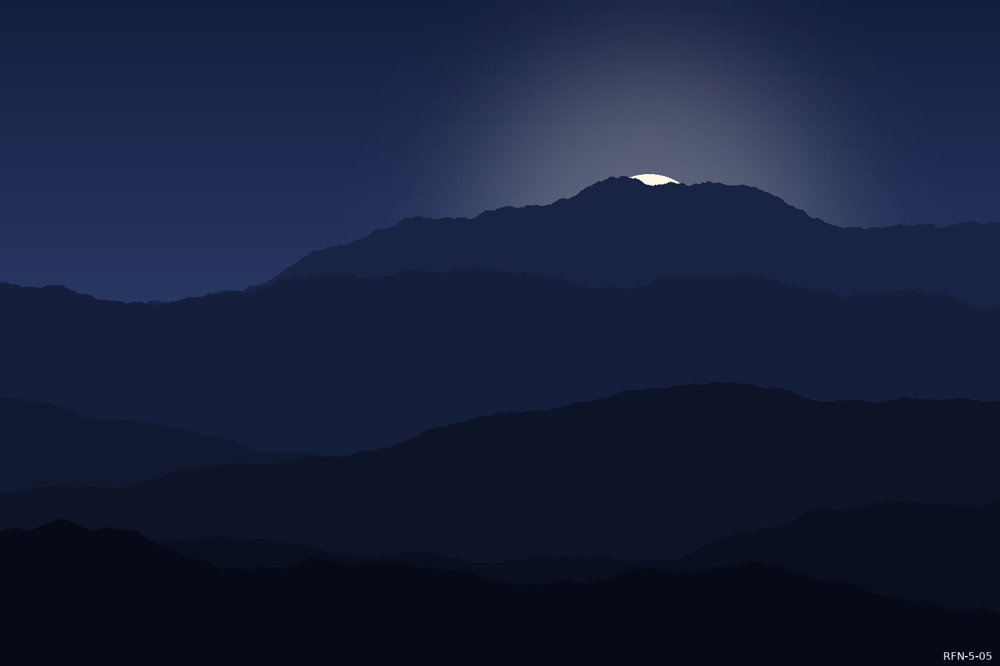

A week of braided rivers
Most of the frames from this trip were made within twenty minutes of sunrise. After that the light flattens out and the ridges lose their layers, so the rest of the day goes to scouting.
We left the trailhead before five, headlamps on, and reached the saddle just as the sky started to change colour. The wind dropped for about ten minutes and that was the window.
The road over the pass closes with the first heavy snow, usually in late October. We made it across two days before the gate went down.

Night shooting means long exposures, cold fingers and a lot of waiting. The moon came over the ridge at 21:40 and lit the snowfield for almost an hour.
Fog is unpredictable here. Some mornings it sits below the cliffs like a second ocean; other mornings it swallows everything and there is nothing to photograph but the sound of the surf.